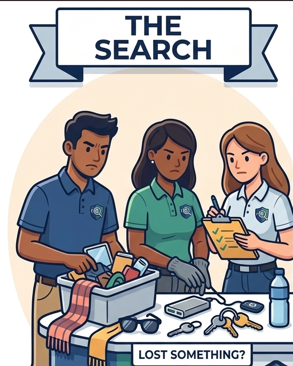

Found Something of High Worth?
Items containing identifiable data, credentials, or significant market value demand immediate drop-box storage containment pipelines.
(You didn't steal it... right?)

Looking For Something You Lost?
Run immediate validation structural searches on verified item databases to cross-check recovery timestamps.
(It is yours.... right?)